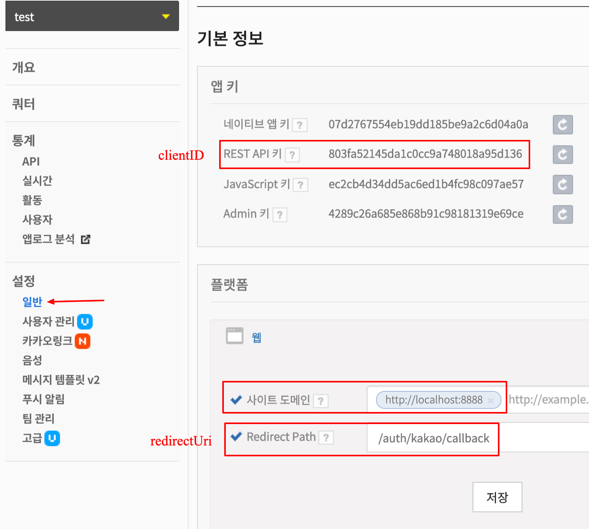
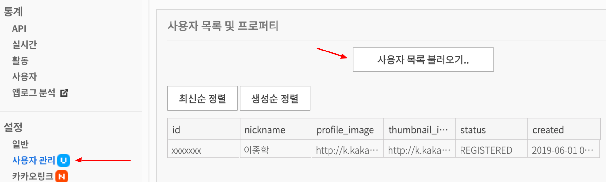
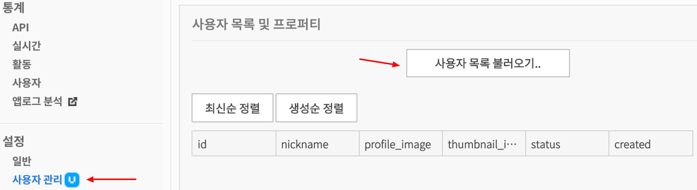

들어가기 앞서 코드의 설명은 nodejs + express 로 하겠습니다.
전체 소스 코드는 gitHub 를 참고하시면 됩니다.
목차
배경
소셜 로그인이란 단어가 나온지 오래 되었는데, 저희 회사 서비스에 소셜 로그인을 기능을 구현하기 위해 이제서야 파헤쳐 보려 합니다.
소셜 로그인 단어를 처음 들었을 때, ‘어떻게 구글이나 페이스북으로 가입한 적이 없는 서비스에 로그인을 할 수 있지?’ 의문이 들었습니다.
이미 소셜 로그인에 대한 블로그는 많지만 개념보다는 구현에 가까운 내용이 많아서 의문점이 풀리질 않았습니다.
그래서 OAuth2 를 정확히 이해하기 위해 준비했습니다. 또한 OAuth2 를 이해하고 소셜 로그인을 라이브러리 없이 직접 구현하려고 합니다.
OAuth 란
위키백과 정의에 따르면, OAuth는 인터넷 사용자들이 비밀번호를 제공하지 않고 다른 웹사이트 상의 자신들의 정보에 대해 웹사이트나 애플리케이션의 접근 권한을 부여할 수 있는 공통적인 수단으로서 사용되는, 접근 위임을 위한 개방형 표준입니다. 사용자가 애플리케이션에게 모든 권한을 넘기지 않고 사용자 대신 서비스를 이용할 수 있게 해주는 HTTP 기반의 보안 프로토콜 입니다.
OAuth를 사용하는 서비스 제공자는 대표적으로 구글, 페이스북 등이 있습니다. 국내에는 대표적으로 네이버와 카카오가 있죠.
OAuth 에서 Auth는 Authentication(인증) & Authorization(허가) 2가지 의미를 포함하고 있습니다. 예를 들어 ‘서비스 제공자를 대신하여 제 3자가 어떤 정보를 사용하도록 접근을 허용하겠는가?’ 라는 물음을 보신적이 있으실 겁니다. 여기서 제 3자는 여러분들이 이용 할 서비스 입니다. 이 물음에 동의하면, 먼저 서비스 제공자에게 자신을 인증하고 제 3자에게 자신의 정보를 사용하도록 접근 권한을 부여 하는 것입니다.
OAuth 로 인해 사용자 입장에서는 더욱더 여러 서비스들을 하나의 계정으로 관리할 수 있게되어 편해지고 개발자 입장에서는 민감한 사용자 정보를 다루지 않아 위험 부담이 줄고 서비스 제공자로 부터 사용자 정보를 활용 할 수 있기 때문에 장점이 상당히 많습니다.
OAuth2 역할
 OAuth2 설계도 이미지 출처 - http://blogs.innovationm.com/spring-security-with-oauth2/
OAuth2 설계도 이미지 출처 - http://blogs.innovationm.com/spring-security-with-oauth2/위 이미지를 보시면, 총 4가지 역할로 구분 할 수 있습니다.
자원 소유자 (Resource Owner)
- 정보의 소유권을 가진 사용자입니다.
자원 서버 (Resource Server)
- 자원 소유자(Resource Owner)의 정보를 보관하고 있는 서버입니다.
- 구글, 페이스북, 네이버, 카카오 등이 있습니다.
인가 서버 (Authorization Server)
- 자원 소유자 (Resource Owner) 을 인증합니다.
- Client 에게 Access token 을 발행합니다.
클라이언트 (Client)
- 제 3자 어플리케이션을 의미합니다.
- 이는 사용자 동의하에 Resource Server 에 사용자의 특정 정보를 요청 할 수 있습니다.
Resource Server 와 Authorization Server 를 구축한 대상을 Provider 라고 부르기도 합니다.
OAuth2 토큰
Authorization Server 로 부터 발급된 랜덤한 문자열입니다. 위 이미지에서 4번 단계에 열쇠 모양으로 표시되고 있으며 토큰은 2가지 종류가 있습니다.
Access Token
- Client 가 Resource Server 에게 사용자 정보를 요청하기 위한 입장권 같은 것입니다.
- 입장권에는 유효기간이 있습니다. 각 provider 마다 다릅니다.
- 유효 기간이 지나면 더 이상 이 토큰을 사용 할 수 없습니다.
Refresh Token
- 위 Access Token 이 유효기간이 만료 되면, 새로운 Access Token 을 발급 받기 위해 필요한 토큰입니다.
- 이 토큰에도 유효기간이 있습니다. 각 provider 마다 다릅니다. Access Token 보다는 유효기간이 훨씬 깁니다.
소셜 로그인
제가 가진 의문인 ‘어떻게 구글이나 페이스북으로 가입한 적이 없는 서비스에 로그인을 할 수 있지?’라는게 풀리는 부분입니다.
글의 제목에서 카카오 로그인 연동 이라는 단어를 사용했습니다. 연동을 하기 위해서는 필수로 서비스에 가입된 상태여야 합니다. 다음으로 서비스 제공자로 부터 사용자 인증 및 허가를 받습니다. 인증자의 정보를 받아 가입한 계정에 저장을 하면 연동이 되는 것입니다. 연동된 계정으로 로그인 시도 시, 서비스 제공자로 부터 재확인이 완료되면, 이 과정이 바로 소셜 로그인 입니다. (ID/PW 로그인이 아님.)
제 3자 서비스의 백앤드 로직에 따라 최초 소셜 로그인 시도 시, 회원가입 및 로그인을 따로 진행하는 경우가 있고 한번에 진행하는 경우가 있습니다.
잠깐 다른 얘기를 꺼내면, 사실 서비스 상황에 따라 DB에 회원 계정을 생성 할 필요는 없습니다. 왜냐하면 Access token 만 사용하여 단순한 기능만을 제공해도 충분하다면 말이죠. 예로 카카오톡 나에게 보내기 기능 처럼 사용자 정보가 필요 없는 Access token 만 갖고도 충분한 상황입니다.
하지만, 위와 같은 경우는 거의 없을 것입니다. 사용자의 데이터를 DB에 저장하고 이를 분석하여 적절한 맞춤형 정보를 제공하기 위해서는 계정이 필요하기 때문이죠.
서버 설정
구현하기 앞서, 서버 설정에 대한 설명입니다.
Client base Url: http://localhost:8888
사용자 계정은 DB 대신 서버에서 생성한 사용자별 session 파일(.json)로 대신하였습니다.
카카오 개발자 어플리케이션 등록하기
- 카카오 개발자 콘솔 로 접속하여 애플리케이션을 생성하고 아래와 같이
clientID, clientSecret, redirect path를 설정합니다.
-
-
- 카카오 개발자 콘솔 설정 - 일반
-
clientID, clientSecret, redirectUri 설정
1
2
3
4
5
6// routes/auth/kakao.js
const kakao = {
clientID: "803fa52145da1c0cc9a748018a95d136",
clientSecret: "BtSD12taxk3DqusTvOjGBQv2MbZoViI3",
redirectUri: "http://localhost:8888/auth/kakao/callback"
};
카카오 로그인 구현
OAuth2 설계도 이미지 출처 - http://blogs.innovationm.com/spring-security-with-oauth2/위 이미지의 화살표에 번호가 1-5번까지 있습니다. 실제 구현에서 1번을 제외하고 2-5번 과정을 구현합니다. 전체 소스 코드는 gitHub 참고 바랍니다.
이 과정은 provider 내부에서 이뤄지기 때문에 구현하는 부분에서 제외합니다.
Client 서비스에 접속
사용자는 http://localhost:8888/auth/kakao 를 클릭하여 3단계를 진행합니다.
소셜 회원 가입 또는 로그인을
/auth/kakao하나로 통합 할 수 있습니다.
1
2
3
4// views/partial/header.ejs
<div>
<a href="/auth/kakao">카카오 간편 로그인</a>
</div>사용자 인증 및 접근 권한 받기
- 미리 카카오에 로그인 되어 있는 경우, 서비스 동의 페이지로 리다이렉트 됩니다.
이때 리다이렉트되는 주소를 확인하시면
/auth/kakaoroute 의해 생성된 주소임을 확인 할 수 있습니다.1
2
3
4
5
6
7
8
9
10
11
12
13
14
15
16// routes/auth/kakao.js
/**
* @summary 카카오 인증 진행하기
*
* @description
* - '간편 로그인' 링크로 접근 했을 때, '사용자 서비스 동의' 페이지로 리다이렉트 합니다.
* - redirectUri 는 인증 성공시, 카카오 개발자 콘솔에 기입한 이동할 주소입니다.
*/
// http://localhost:8888/auth/kakao
router.get("/", (req, res) => {
const kakaoAuthUrl = `https://kauth.kakao.com/oauth/authorize?client_id=${
kakao.clientID
}&redirect_uri=${kakao.redirectUri}&response_type=code`;
return res.redirect(kakaoAuthUrl);
});인증 완료 후, 카카오 개발자 콘솔에서 어플리케이션에 등록된 사용자 목록입니다.
카카오 개발자 콘솔 설정 - 사용자 관리 - 사용자 목록
Authorization Server 부터 Access token 발급받기 & 사용자 정보 요청하기
3번 과정이 완료된 후, 받은 code 를 https://kauth.kakao.com/oauth/token 에 요청하여 Access token 을 받습니다.
5번 과정을 이 과정에서 함께 설명하도록 하겠습니다.
- 사용자 기본 정보를 얻기 위해 발급 받은 Access token 으로 https://kapi.kakao.com/v2/user/me 에 요청 합니다.
- linkUser() 함수를 통해 사용자 session 정보에 Access token과 사용자 기본 정보를 저장합니다. (저장 결과는 하단 참고)
1
2
3
4
5
6
7
8
9
10
11
12
13
14
15
16
17
18
19
20
21
22
23
24
25
26
27
28
29
30
31
32
33
34
35
36
37
38
39
40
41
42
43
44
45
46
47
48
49
50
51
52
53
54
55
56
57
58
59
60
61
62
63
64
65
66
67
68
69
70
71
72
73
74
75
76
77
78
79
80
81
82
83
84
85
86
87
88
89
90
91
92
93
94
95
96
97
98
99
100
101
102// routes/auth/kakao.js
/**
* @summary 사용자 계정을 provider 로 연동. 인증 정보와 함께 저장
*
* @param {*} session 사용자 세션
* @param {*} provider 공급사
* @param {*} authData 인증 정보
*/
function linkUser(session, provider, authData) {
let result = false;
if (session.authData) {
if (session.authData[provider]) {
// 이미 계정에 provider 가 연결되어 있는 경우
return result;
}
session.authData[provider] = authData;
} else {
session.authData = {
[provider]: authData
};
}
result = true;
return result;
}
/**
*
* @summary '사용자 서비스 동의' 완료 후, 이동되는 주소.
*
* @description
* - 사용자로부터 동의를 구한 후, 서비스 내에서 처리할 로직을 구현합니다.
*/
// http://localhost:8888/auth/kakao/callback
router.get("/callback", async (req, res) => {
const { session, query } = req;
const { code } = query;
console.info("==== session ====");
console.log(session);
let tokenResponse;
try {
// Authorization Server 부터 Access token 발급받기
tokenResponse = await axios({
method: "POST",
url: 'https://kauth.kakao.com/oauth/token',
headers: {
"content-type": "application/x-www-form-urlencoded"
},
data: qs.stringify({
grant_type: "authorization_code",
client_id: kakao.clientID,
client_secret: kakao.clientSecret,
redirect_uri: kakao.redirectUri,
code
})
});
} catch (error) {
return res.json(error.data);
}
console.info("==== tokenResponse.data ====");
console.log(tokenResponse.data);
const { access_token } = tokenResponse.data;
let userResponse;
try {
// access_token 으로 사용자 정보 요청하기
userResponse = await axios({
method: "GET",
url: "https://kapi.kakao.com/v2/user/me",
headers: {
Authorization: `Bearer ${access_token}`
}
});
} catch (error) {
return res.json(error.data);
}
console.info("==== userResponse.data ====");
console.log(userResponse.data);
const authData = {
...tokenResponse.data,
...userResponse.data
};
const result = linkUser(session, "kakao", authData);
if (result) {
console.info("계정에 연결되었습니다.");
} else {
console.warn("이미 연결된 계정입니다.");
}
res.redirect("/");
});세션 파일에 저장된 사용자 정보
1
2
3
4
5
6
7
8
9
10
11
12
13
14
15
16
17
18
19
20
21
22
23
24
25
26
27
28
29
30
31
32{
"cookie":{
"originalMaxAge":null,
"expires":null,
"httpOnly":true,
"path":"/"
},
"__lastAccess":1559314094266,
"authData":{
"kakao":{
"access_token":"leeDsQ5cKYUqX0VmF94T4GljGEMWrDTdHMcUyworDR4AAAFrDlzUBg",
"token_type":"bearer",
"refresh_token":"0N5qjWKMCBsF4nqxoA7_lRf1d4JVQQGchRMC4worDR4AAAFrDlzUBA",
"expires_in":21599,
"scope":"account_email profile",
"refresh_token_expires_in":2591999,
"id":"xxxxxxxxxxx",
"properties":{
"nickname":"이종학",
"profile_image":"http://k.kakaocdn.net/dn/bu6KcI/btqvJSMkboY/k9XRhVYKqKD7A75QS3gnI0/profile_640x640s.jpg",
"thumbnail_image":"http://k.kakaocdn.net/dn/bu6KcI/btqvJSMkboY/k9XRhVYKqKD7A75QS3gnI0/profile_110x110c.jpg"
},
"kakao_account":{
"has_email":true,
"email_needs_agreement":false,
"is_email_valid":true,
"is_email_verified":true,
"email":"xxxxx@xxxx.xxx"
}
}
}
}사용자 Client 앱 연동 해제
- Client 앱에 대한 인증 및 허가를 철회합니다.
1
2
3
4// views/partial/header.ejs
<div>
<a href="/auth/kakao/unlink">카카오 앱 연결 해제</a>
</div>1
2
3
4
5
6
7
8
9
10
11
12
13
14
15
16
17
18
19
20
21
22
23
24
25
26
27
28
29
30
31
32
33
34
35
36
37
38
39
40
41
42
43
44
45
46
47
48
49
50
51
52
53
54
55
56
57
58
59// routes/auth/kakao.js
/**
* @summary 카카오로 연동한 계정을 연결 해제. 사용자 authData 정보 삭제.
*
* @param {*} session 사용자 세션
* @param {*} provider 공급사
*/
function unlinkUser(session, provider, userId) {
let result = false;
if (
session.authData &&
session.authData[provider] &&
session.authData[provider].id === userId
) {
delete session.authData[provider];
result = true;
}
return result;
}
/**
* @summary 사용자 앱 연결 해제 링크
*/
// http://localhost:8888/auth/kakao/unlink
router.get("/unlink", async (req, res) => {
const { session } = req;
const { access_token } = session.authData.kakao;
let unlinkResponse;
try {
unlinkResponse = await axios({
method: "POST",
url: "https://kapi.kakao.com/v1/user/unlink",
headers: {
Authorization: `Bearer ${access_token}`
}
});
} catch (error) {
return res.json(error.data);
}
console.log("==== unlinkResponse.data ====");
console.log(unlinkResponse.data);
const { id } = unlinkResponse.data;
const result = unlinkUser(session, "kakao", id);
if (result) {
console.log("연결 해제되었습니다.");
} else {
console.log("카카오와 연동된 계정이 아닙니다.");
}
res.redirect("/");
});- 앱 연결 해제 후, 카카오 개발자 콘솔 사용자 목록 입니다.
카카오 개발자 콘솔 설정 - 사용자 관리 - 사용자 목록
마치며
OAuth 로그인을 라이브러리 없이 직접 구현해봤습니다. 실제 3~4일을 삽질했던것 같네요. 이렇게 직접 구현해 본 후, 다른 provider 도 이와 같이 쉽게 구현 할 수 있을 것 같습니다.
참고
생활코딩 - https://opentutorials.org/course/3405
- 개념 및 실습 위주의 동영상 강의입니다.
네이버 D2 - https://d2.naver.com/helloworld/24942
- OAuth 및 이와 관련된 내용이 잘 설명되어 있다.

{kind=link}
{kind=link}
{kind=link}
{kind=link}
{kind=link}
{kind=link}
{kind=link}